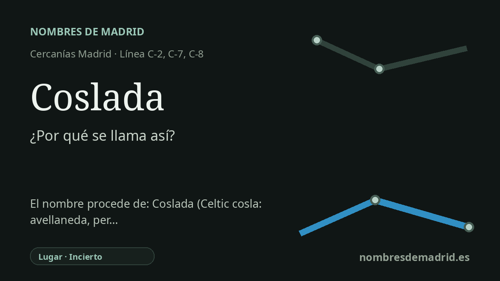

Publicado el · Investigación de Nombres de Madrid · Cómo verificamos cada origen · 8 fuentes consultadas
Respuesta rápida
La estación de Coslada toma su nombre del municipio al que sirve. El topónimo es antiguo y discutido: Menéndez Pidal lo relacionó con una voz céltica para el avellano, mientras otros autores lo han vinculado al pedernal, al yeso o a las vías ganaderas locales.
La historia del nombre
La estación de Coslada toma su nombre del municipio de Coslada. En términos de transporte es un caso sencillo de denominación: Renfe identifica Coslada como estación de Cercanías en zona tarifaria B1, servida por las líneas C-2, C-7 y C-8, y conectada con la línea 7 de Metro en Coslada Central.
La cuestión difícil es qué significa el topónimo antiguo Coslada. Ramón Menéndez Pidal, en *Toponimia prerrománica hispana*, relacionó el nombre con una forma céltica *coslo* o *cosla*, con el significado de avellano o avellana. Unido a un sufijo romance, el resultado sería algo parecido a una avellaneda, explicación que han repetido después relatos locales y estudios de toponimia madrileña.
Esa explicación, aunque atractiva, no es la única. Una guía histórica regional describe el origen del nombre como confuso y recoge otra propuesta de Aurelio García López: *cos* como pedernal y *late* como abundante o extenso, vinculada a las canteras de yeso y pedernal de Coslada. La misma guía añade con cautela una posible relación con *colada*, en el sentido de paso ganadero, porque por el término discurrían vías pecuarias importantes, entre ellas la Cañada Galiana.
El contexto histórico encaja con una población medieval modesta en el lado oriental de Madrid. Las publicaciones sobre el valle del Henares y la historia archivística municipal sitúan a Coslada dentro del alfoz de Madrid y del sexmo de Vallecas; las referencias tempranas más claras corresponden al reinado de Fernando III o, según la fuente y el documento citado, a fechas anteriores a 1273. Descripciones posteriores todavía la presentan como un lugar agrícola pequeño en el que también tenía importancia la extracción de piedra.
Para una ficha pública de estación, la formulación más sólida es prudente. La estación se llama, con seguridad, por el municipio. El nombre del municipio parece antiguo y premoderno, pero su etimología sigue discutida: la lectura céltica de la avellaneda es la hipótesis académica más conocida, mientras que las explicaciones del pedernal, las canteras y las vías ganaderas conservan argumentos geográficos locales. La derivación desde el latín *cova ustulata*, 'cueva quemada', es tratada explícitamente por Jairo Javier García Sánchez como mera hipótesis.